Turandot by Giacomo Puccini, one of the most captivating operas, comes to life in a visionary staging by acclaimed director Giorgio Barberio Corsetti. Featuring set designs by the innovative Cristian Taraborrelli and video projections by multimedia artist Pierrick Sorin, this production transforms Puccini's final masterpiece into a dreamlike visual experience.
Set in a mythical and enchanted China, the story of Turandot intertwines themes of love, sacrifice, and redemption. With an array of scenic elements blending classical references with modern visual technologies, the production highlights both the ethereal beauty of the narrative and the emotional intensity of Puccini's music.
Turandot di Giacomo Puccini, una delle opere più affascinanti del repertorio, prende vita in un allestimento visionario del regista Giorgio Barberio Corsetti. Con le scenografie di Cristian Taraborrelli e le videoproiezioni dell'artista multimediale Pierrick Sorin, questa produzione trasforma l'ultimo capolavoro di Puccini in un'esperienza visiva onirica.
Ambientata in una Cina mitica e incantata, la storia di Turandot intreccia temi di amore, sacrificio e redenzione. Con elementi scenici che fondono riferimenti classici e tecnologie visive moderne, la produzione esalta sia la bellezza eterea della narrazione sia l'intensità emotiva della musica di Puccini.
Turandot de Giacomo Puccini, l'un des opéras les plus captivants du répertoire, prend vie dans une mise en scène visionnaire du metteur en scène Giorgio Barberio Corsetti. Avec les décors de Cristian Taraborrelli et les projections vidéo de l'artiste multimédia Pierrick Sorin, cette production transforme le dernier chef-d'œuvre de Puccini en une expérience visuelle onirique.
Située dans une Chine mythique et enchantée, l'histoire de Turandot entrelace des thèmes d'amour, de sacrifice et de rédemption. Avec des éléments scéniques mêlant références classiques et technologies visuelles modernes, la production met en valeur tant la beauté éthérée du récit que l'intensité émotionnelle de la musique de Puccini.
L'Opera — Un capolavoro incompiuto
Turandot è l'ultima opera di Giacomo Puccini, rimasta incompiuta alla sua morte nel novembre 1924. Basata sulla fiaba teatrale di Carlo Gozzi del 1762, racconta la storia della principessa di ghiaccio Turandot, che condanna a morte ogni pretendente incapace di risolvere i suoi tre enigmi. Solo il principe ignoto Calaf osa sfidarla — e vincere.
Puccini lavorò alla partitura per oltre quattro anni, lasciando incompiuto il duetto finale del terzo atto. La versione rappresentata alla prima assoluta del 25 aprile 1926 alla Scala — diretta da Arturo Toscanini — fu completata da Franco Alfano. Si narra che Toscanini, quella sera, posò la bacchetta esattamente nel punto in cui Puccini aveva smesso di scrivere, si volse al pubblico e disse: «Qui il Maestro ha posato la penna.»
La partitura contiene alcune delle arie più celebri dell'intero repertorio operistico: «Nessun dorma», divenuta icona della cultura popolare mondiale, e «Signore, ascolta», il toccante appello di Liù, la schiava che sacrifica la propria vita per amore.
Turandot is Giacomo Puccini's last opera, left unfinished at his death in November 1924. Based on Carlo Gozzi's theatrical fable of 1762, it tells the story of the ice princess Turandot, who condemns to death every suitor unable to solve her three riddles. Only the unknown prince Calaf dares to challenge her — and win.
Puccini worked on the score for over four years, leaving the final duet of the third act incomplete. The version performed at the world premiere on April 25, 1926, at La Scala — conducted by Arturo Toscanini — was completed by Franco Alfano. It is said that Toscanini, that evening, laid down his baton at the exact point where Puccini had stopped writing, turned to the audience and said: «Here the Maestro laid down his pen.»
The score contains some of the most celebrated arias in the entire operatic repertoire: «Nessun dorma», which has become an icon of world popular culture, and «Signore, ascolta», the touching plea of Liù, the slave who sacrifices her own life for love.
Turandot est le dernier opéra de Giacomo Puccini, resté inachevé à sa mort en novembre 1924. Basé sur la fable théâtrale de Carlo Gozzi de 1762, il raconte l'histoire de la princesse de glace Turandot, qui condamne à mort tout prétendant incapable de résoudre ses trois énigmes. Seul le prince inconnu Calaf ose la défier — et vaincre.
Puccini travailla sur la partition pendant plus de quatre ans, laissant inachevé le duo final du troisième acte. La version représentée lors de la première mondiale le 25 avril 1926 à la Scala — dirigée par Arturo Toscanini — fut complétée par Franco Alfano. On raconte que Toscanini, ce soir-là, posa sa baguette exactement au point où Puccini avait cessé d'écrire, se tourna vers le public et dit : «Ici le Maître a posé sa plume.»
La partition contient certains des airs les plus célèbres de tout le répertoire lyrique : «Nessun dorma», devenu icône de la culture populaire mondiale, et «Signore, ascolta», l'appel touchant de Liù, l'esclave qui sacrifie sa propre vie par amour.
Curiosità
La prima assoluta alla Scala. Turandot debutò proprio al Teatro alla Scala il 25 aprile 1926. Questa produzione del 2011 rappresenta quindi un ritorno alle origini, nello stesso teatro dove tutto ebbe inizio 85 anni prima.
La fonte orientale. Gozzi non conosceva la Cina. La sua fiaba attingeva alle Mille e una notte e ai racconti persiani. Il nome Turandot deriva dal persiano «Turandokht», ovvero «figlia del Turan». L'ambientazione cinese è quindi una proiezione fantastica dell'Oriente immaginato dall'Europa del Settecento.
Il problema del finale. Puccini era tormentato dal duetto d'amore finale: come rendere credibile la trasformazione di Turandot da principessa di ghiaccio a donna innamorata? Questo dilemma drammaturgico lo accompagnò fino alla morte. Ancora oggi, registi e scenografi affrontano questa sfida interpretativa.
Ping, Pang, Pong. I tre ministri sono un omaggio diretto alla Commedia dell'Arte italiana. Puccini li concepì come maschere comiche nel cuore di una tragedia, creando un contrasto drammatico che anticipa tecniche narrative moderne.
The world premiere at La Scala. Turandot premiered at Teatro alla Scala on April 25, 1926. This 2011 production therefore represents a return to origins, in the very theatre where it all began 85 years earlier.
The Oriental source. Gozzi had never been to China. His fable drew from the Thousand and One Nights and Persian tales. The name Turandot comes from the Persian «Turandokht», meaning «daughter of Turan». The Chinese setting is thus a fantastical projection of the Orient as imagined by eighteenth-century Europe.
The problem of the ending. Puccini was tormented by the final love duet: how to make Turandot's transformation from ice princess to a woman in love believable? This dramaturgical dilemma haunted him until his death. To this day, directors and designers grapple with this interpretive challenge.
Ping, Pang, Pong. The three ministers are a direct tribute to the Italian Commedia dell'Arte. Puccini conceived them as comic masks at the heart of a tragedy, creating a dramatic contrast that anticipates modern narrative techniques.
La première mondiale à la Scala. Turandot fut créé au Teatro alla Scala le 25 avril 1926. Cette production de 2011 représente donc un retour aux origines, dans le théâtre même où tout a commencé 85 ans plus tôt.
La source orientale. Gozzi ne connaissait pas la Chine. Sa fable puisait dans les Mille et Une Nuits et les contes persans. Le nom Turandot vient du persan «Turandokht», soit «fille du Turan». Le cadre chinois est donc une projection fantastique de l'Orient imaginé par l'Europe du XVIIIe siècle.
Le problème du final. Puccini était tourmenté par le duo d'amour final : comment rendre crédible la transformation de Turandot de princesse de glace en femme amoureuse ? Ce dilemme dramaturgique l'accompagna jusqu'à sa mort. Aujourd'hui encore, metteurs en scène et scénographes affrontent ce défi interprétatif.
Ping, Pang, Pong. Les trois ministres sont un hommage direct à la Commedia dell'Arte italienne. Puccini les conçut comme des masques comiques au cœur d'une tragédie, créant un contraste dramatique qui anticipe les techniques narratives modernes.
La Visione — Corsetti, Taraborrelli, Sorin
La regia di Giorgio Barberio Corsetti non cerca il realismo della Cina imperiale, ma un luogo mentale: una Pechino onirica sospesa tra sogno e incubo, dove il potere si manifesta attraverso architetture mobili e immagini proiettate.
Cristian Taraborrelli traduce questa visione in una scenografia fatta di grandi strutture lignee modulari — torri praticabili, ponti, balconate — che si scompongono e ricompongono tra un atto e l'altro, trasformando lo spazio da piazza del popolo a sala del trono, da giardino notturno a palazzo imperiale. Il legno scuro, materia dominante, evoca insieme la tradizione costruttiva orientale e l'idea di una città assediata dalla paura.
Pierrick Sorin, artista visivo francese noto per le sue video-installazioni, inserisce nello spazio scenico proiezioni che amplificano la dimensione fantastica: figure fluttuanti, nuvole che attraversano il palcoscenico, la luna che sovrasta gli enigmi. Le immagini non illustrano l'azione ma ne rivelano il sottotesto psicologico, creando un terzo livello tra cantanti e scenografia.
Giorgio Barberio Corsetti's direction does not seek the realism of imperial China, but a mental landscape: a dreamlike Beijing suspended between dream and nightmare, where power manifests itself through mobile architecture and projected images.
Cristian Taraborrelli translates this vision into a set made of large modular wooden structures — walkable towers, bridges, balconies — that disassemble and reassemble between acts, transforming the space from a people's square to a throne room, from a night garden to an imperial palace. The dark wood, the dominant material, evokes both the Eastern building tradition and the idea of a city besieged by fear.
Pierrick Sorin, a French visual artist known for his video installations, introduces projections into the scenic space that amplify the fantastical dimension: floating figures, clouds crossing the stage, the moon looming over the riddles. The images do not illustrate the action but reveal its psychological subtext, creating a third layer between singers and set.
La mise en scène de Giorgio Barberio Corsetti ne cherche pas le réalisme de la Chine impériale, mais un lieu mental : un Pékin onirique suspendu entre rêve et cauchemar, où le pouvoir se manifeste à travers des architectures mobiles et des images projetées.
Cristian Taraborrelli traduit cette vision en une scénographie faite de grandes structures modulaires en bois — tours praticables, ponts, balcons — qui se décomposent et se recomposent entre les actes, transformant l'espace de place du peuple en salle du trône, de jardin nocturne en palais impérial. Le bois sombre, matière dominante, évoque à la fois la tradition constructive orientale et l'idée d'une cité assiégée par la peur.
Pierrick Sorin, artiste visuel français connu pour ses vidéo-installations, introduit dans l'espace scénique des projections qui amplifient la dimension fantastique : figures flottantes, nuages traversant le plateau, la lune surplombant les énigmes. Les images n'illustrent pas l'action mais en révèlent le sous-texte psychologique, créant un troisième niveau entre chanteurs et scénographie.
Scenography — Foto di scena

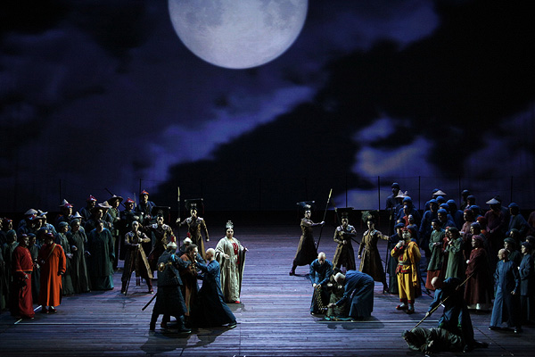
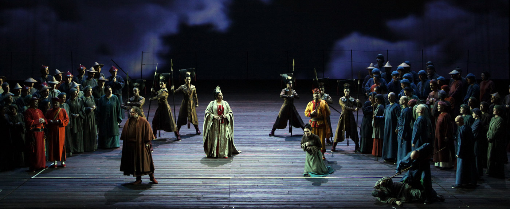
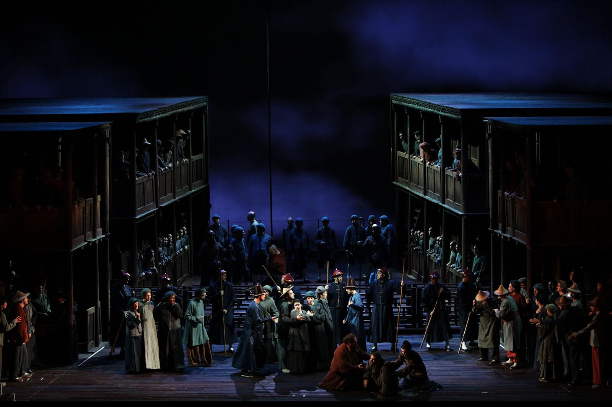
Costumes — Dettagli artigianali
I costumi di questa produzione sono il risultato di una ricerca che intreccia i motivi decorativi della tradizione cinese con una sensibilità contemporanea. Ogni abito è stato disegnato e realizzato con tecniche artigianali: dalla pittura a mano dei draghi imperiali sulla seta, alla doratura dei ricami, fino alla lavorazione dei broccati. Le immagini qui sotto documentano il processo creativo, mostrando in bianco e nero le mani degli artigiani al lavoro e a colori il risultato finale.
The costumes of this production are the result of research that interweaves the decorative motifs of Chinese tradition with a contemporary sensibility. Each garment was designed and crafted using artisan techniques: from hand-painting imperial dragons on silk, to gilding embroidery, to working brocades. The images below document the creative process, showing in black and white the hands of craftsmen at work and in colour the final result.
Les costumes de cette production sont le fruit d'une recherche qui entrelace les motifs décoratifs de la tradition chinoise avec une sensibilité contemporaine. Chaque vêtement a été conçu et réalisé selon des techniques artisanales : de la peinture à la main des dragons impériaux sur la soie, à la dorure des broderies, jusqu'au travail des brocarts. Les images ci-dessous documentent le processus créatif, montrant en noir et blanc les mains des artisans au travail et en couleur le résultat final.
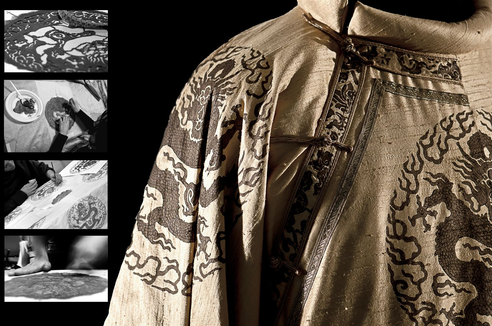
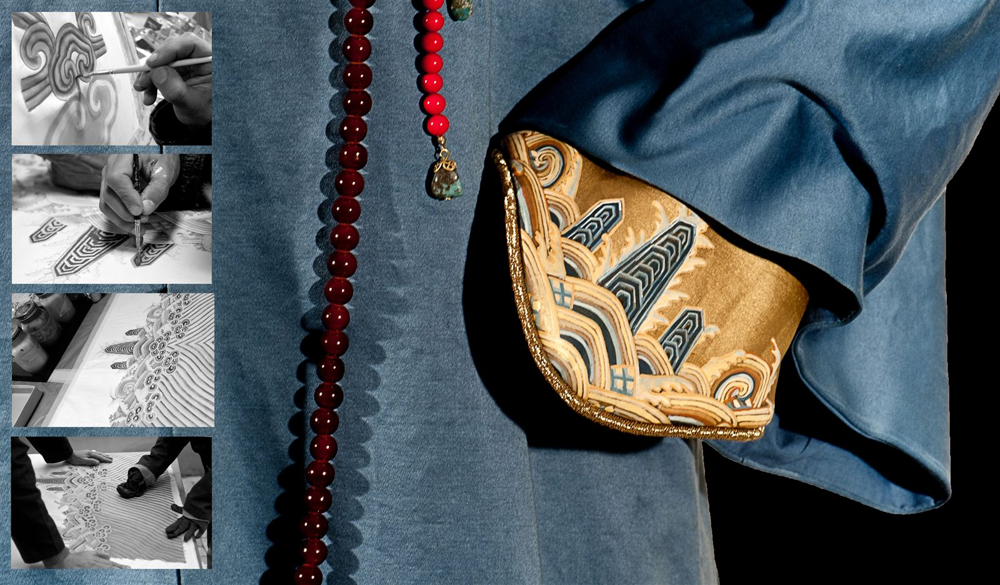
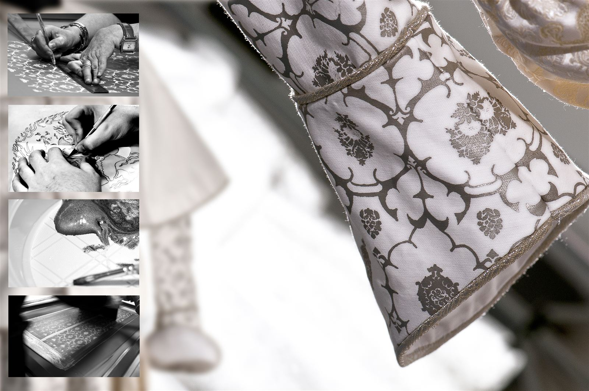
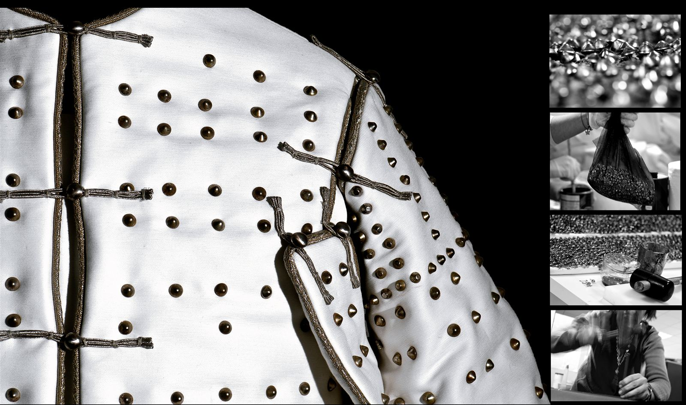
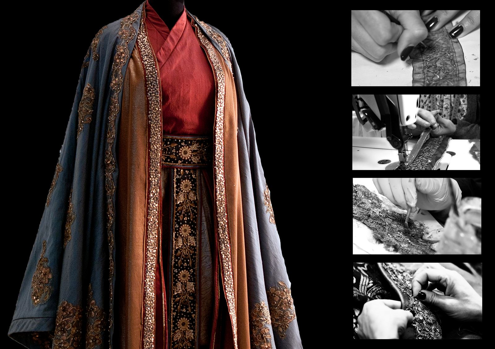
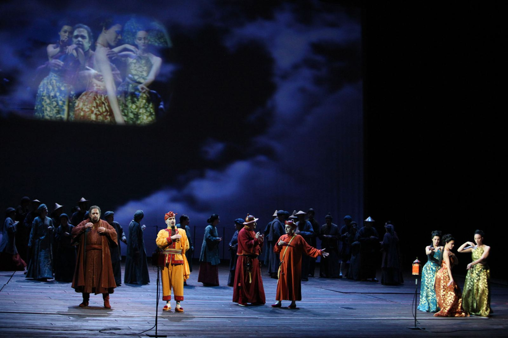
Making Of — Laboratori Ansaldo, Teatro alla Scala
I Laboratori della Scala presso l'ex stabilimento Ansaldo, nel quartiere Tortona di Milano, sono uno dei più grandi centri di produzione scenografica al mondo: 20.000 metri quadrati dove falegnami, pittori, scultori e fabbri trasformano i bozzetti del progettista in realtà tridimensionali.
Per Turandot, le scenografie hanno richiesto mesi di lavorazione. I fondali sono stati dipinti a terra su tele di centinaia di metri quadrati, con la tecnica tradizionale della pittura scenografica a pennello largo. Le strutture del palazzo imperiale — i grandi pannelli rossi con decorazioni dorate — sono stati costruiti in legno e poi rifiniti a mano, uno per uno, con foglia d'oro applicata dagli artigiani specializzati della Scala.
Il tetto cinese visibile nelle foto è un elemento scenico di oltre 4 metri, realizzato con tegole in resina modellate singolarmente e assemblate su struttura metallica. Ogni dettaglio — dalle guarnizioni in bronzo ai fregi floreali — è stato scolpito e dorato a mano, seguendo fedelmente i riferimenti dell'architettura della Città Proibita di Pechino.
La Scala's Workshops at the former Ansaldo factory, in Milan's Tortona district, are one of the largest scenic production centres in the world: 20,000 square metres where carpenters, painters, sculptors and blacksmiths transform the designer's sketches into three-dimensional reality.
For Turandot, the sets required months of work. The backdrops were painted on the ground on canvases of hundreds of square metres, using the traditional technique of broad-brush scenic painting. The imperial palace structures — the large red panels with gilded decorations — were built in wood and then hand-finished, one by one, with gold leaf applied by La Scala's specialised craftsmen.
The Chinese roof visible in the photos is a scenic element over 4 metres tall, made with individually moulded resin tiles assembled on a metal framework. Every detail — from the bronze fittings to the floral friezes — was hand-carved and gilded, faithfully following the architectural references of Beijing's Forbidden City.
Les Ateliers de la Scala, installés dans l'ancienne usine Ansaldo, dans le quartier Tortona de Milan, sont l'un des plus grands centres de production scénographique au monde : 20 000 mètres carrés où menuisiers, peintres, sculpteurs et forgerons transforment les esquisses du concepteur en réalités tridimensionnelles.
Pour Turandot, les décors ont nécessité des mois de travail. Les toiles de fond ont été peintes au sol sur des toiles de centaines de mètres carrés, selon la technique traditionnelle de la peinture scénographique au pinceau large. Les structures du palais impérial — les grands panneaux rouges aux décorations dorées — ont été construites en bois puis finies à la main, une par une, avec de la feuille d'or appliquée par les artisans spécialisés de la Scala.
Le toit chinois visible sur les photos est un élément scénique de plus de 4 mètres, réalisé avec des tuiles en résine modelées individuellement et assemblées sur une structure métallique. Chaque détail — des garnitures en bronze aux frises florales — a été sculpté et doré à la main, en suivant fidèlement les références de l'architecture de la Cité Interdite de Pékin.
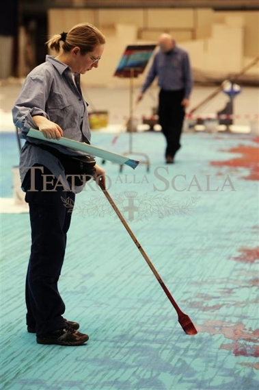
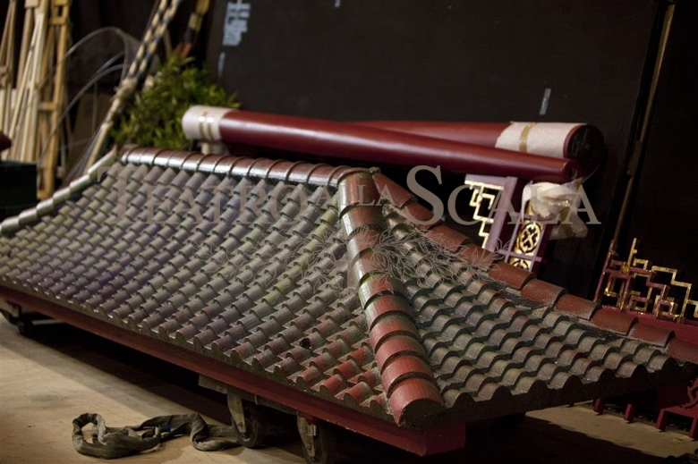
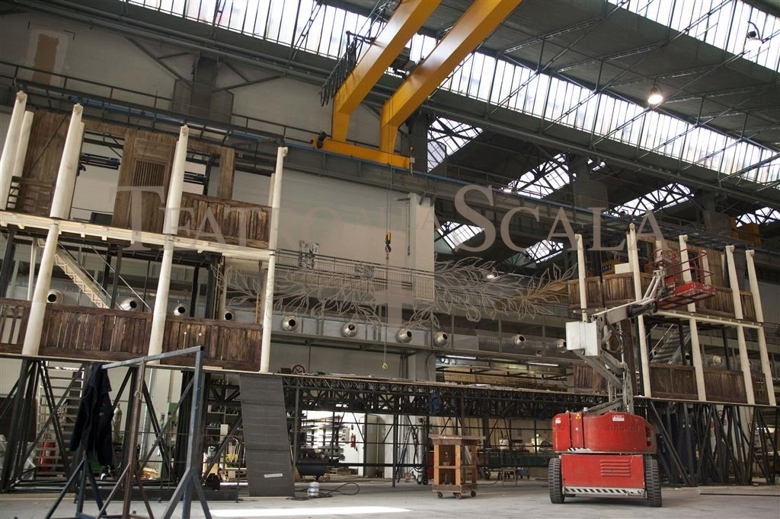
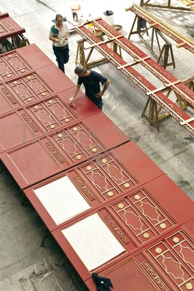
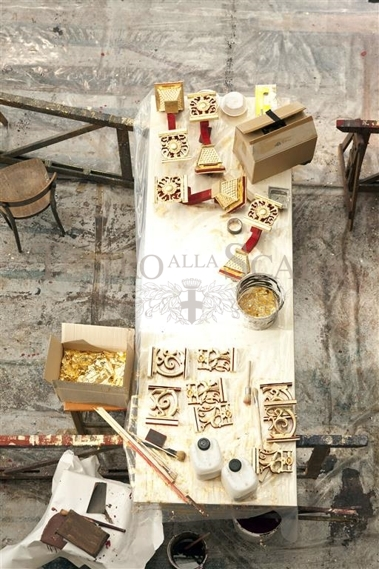
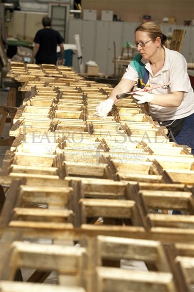
Photo credits: © Teatro alla Scala — Archivio Fotografico
Creative Team
Press & Reviews
Tags